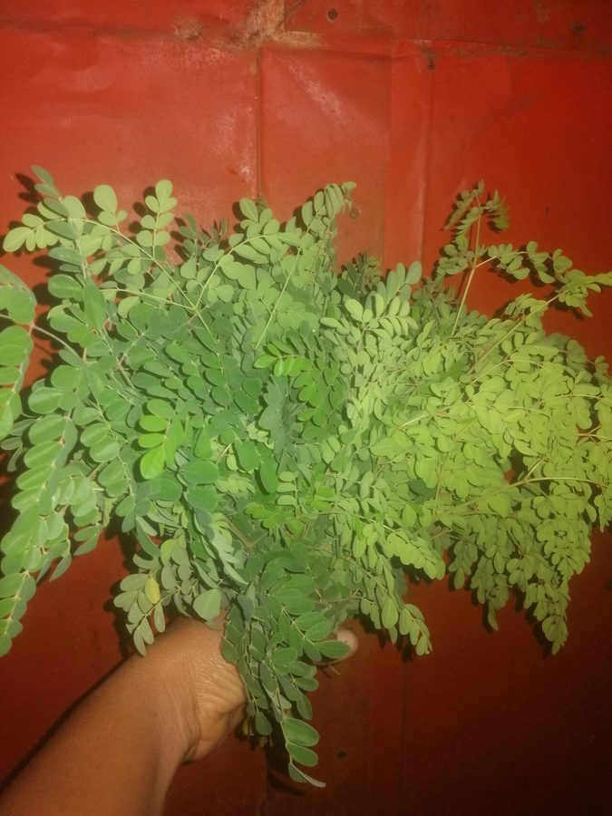

सहजनDrumstick Tree
Moringa oleifera · Moringaceae · FLR-0063

- Scientific name
- Moringa oleifera Lam.
- Family
- Moringaceae
- Hindi
- सहजन
- Status here
- cultivated
- IUCN
- not evaluated
When to look कब देखें
Present all year.
सहजन / Drumstick Tree
Moringa oleifera Lam. — Moringaceae
सहजन (मुनगा / मोरिंगा) — पूर्वी उत्तर प्रदेश के ग्रामीण घरों के आहातों (बाड़ी), खेत की मेड़ों और बगीचों में पाया जाने वाला एक मध्यम आकार का, अत्यंत गुणकारी और तेजी से बढ़ने वाला बहुउपयोगी पेड़ है। इस पेड़ की सबसे बड़ी विशेषता यह है कि इसका प्रत्येक भाग — पत्तियाँ, फूल, कोमल फलियाँ (sahjan ki fali), बीज और यहाँ तक कि इसकी छाल व जड़ें भी — खाद्य या औषधीय रूप से उपयोगी होती हैं। इसकी हरी पत्तियाँ पोषक तत्वों से भरपूर एक 'सुपरफूड' हैं जो विटामिन और आयरन से भरपूर होती हैं। इसके सफ़ेद सुगंधित फूलों की सब्जी और कोमल लंबी फलियों (drumsticks) को सांभर व करी में बड़े चाव से खाया जाता है। यह सूखी और बंजर भूमि में भी आसानी से उग जाता है। इसके बीजों के पाउडर का उपयोग गंदे पानी को साफ करने के लिए भी किया जाता है।
Quick Identification त्वरित पहचान
| Feature | Description |
|---|---|
| Tree habit | Medium-sized, deciduous tree up to 10–12 meters high; trunk has corky, soft, grey bark |
| Leaves | Tripinnate compound leaves; leaflets are tiny, oval, paper-thin, and grass-green |
| Flowers | Cream-white, intensely fragrant, 5-petaled flowers, blooming in large, hanging clusters |
| Fruit | Long, slender, 3-sided, ribbed hanging green pods ("drumsticks"), turning dark brown and splitting when ripe |
| Seeds | Round seeds with three papery wings, packed inside the dry pods |
Field tip: Look in village backyards. Search for a small tree with light, feathery, drooping foliage and hanging, green, rod-like pods. The bark is soft and exudes a reddish-brown gum when cut. The tree has cream-white flowers.
Morphology आकारिकी
Biometrics (typical measurements of mature trees in the northern Indian plains):
| Measurement | Range |
|---|---|
| Tree height | 10–12 m |
| Trunk diameter (DBH) | 20–40 cm |
| Leaf length | 30–60 cm |
| Leaflet length | 1.0–2.0 cm |
| Pod length | 20–50 cm |
| Seed count per pod | 15–25 seeds |
Trunk and Bark: The wood is soft and light. The bark is thick, corky, greyish-white, with deep vertical fissures. The branches are delicate and break easily under wind or physical weight.
Foliage: The leaves are alternate, tripinnate, consisting of numerous small, opposite, oval leaflets. The leaflets are dark green above and paler beneath.
Flowers: Cream-white, fragrant, bisexual, arranged in large axillary panicles. Each flower has five unequal, spreading petals.
Fruit and Seeds: The fruit is a long, hanging, triangular capsule (pod). When mature, it turns dry and brown, splitting into three valves to release the winged, dark brown, pea-sized seeds.
Associated Species / Interactions संबंधित प्रजातियाँ
- Pollinators: The fragrant white flowers are visited by many insects, including honeybees (Apis cerana and Apis mellifera), carpenter bees (Xylocopa species), and sunbirds.
- Foliage feeders: The leaves are consumed by various caterpillars and grasshoppers.
- Birds: Small insectivorous birds (like tailorbirds and warblers) search the foliage for aphids.
Pests and Diseases कीट और रोग
- Moringa Hairy Caterpillar: Eupterote mollifera is a major pest. The caterpillars feed in large groups on the trunk during the day and strip the leaves at night. The caterpillars are covered in irritating hairs that cause severe skin itching on contact.
- Moringa Bud Worm: Noorda moringae larvae bore into the flower buds, causing them to dry up and fall off.
- Root Rot: Caused by Diplodia species in waterlogged, clay soils, leading to tree decay.
Traditional and Ethnobotanical Use पारंपरिक और नृवंशवनस्पति उपयोग
- Nutritious Vegetable Preparation: The young, green pods are cut into pieces, boiled, and cooked with potato or lentils. The cream-white flowers are sautéed with spices to make a dry vegetable side dish (sahjan ke phool ki sabji).
- Superfood Leaf Powder: The leaves are dried in shade, ground into a fine green powder, and added to wheat flour, milk, or water as a daily health tonic to treat anemia and joint weakness.
- Traditional Sciatica Remedy: The soft bark of the roots is boiled in water to make a decoction, which is consumed in traditional Ayurvedic practices to relieve joint pain, arthritis, and sciatica.
- Water Purification (Flocculation): The mature seeds are removed from dry pods, ground into a fine white powder, and mixed with turbid pond water. The seed proteins act as a natural coagulant, binding to clay particles and forcing them to settle to the bottom, leaving the water clear.
Expected Locally स्थानीय रूप से अपेक्षित
Not a field record. Written from published accounts for eastern Uttar Pradesh. No confirmed local sighting yet — if you have seen it, that is what the atlas needs.
अभी तक स्थानीय पुष्टि नहीं। यह विवरण प्रकाशित स्रोतों से है, किसी अवलोकन से नहीं।
A highly common tree in every village backyard (bari) across the Basti district. They are regularly observed in the Harraiya, Vikramjot, and Basti blocks. Residents state that almost every household plants at least one drumstick tree near their cowshed or kitchen yard. The flowering display in February fills the local air with a sweet, honey-like fragrance.
Distribution वितरण
Global range: Native to the Himalayan foothills of northwestern India; now cultivated globally in tropical and subtropical regions across Asia, Africa, and the Americas.
In India: Cultivated and naturalized in all states and plains.
In Uttar Pradesh: Abundant in all Gangetic plains, kitchen gardens, and farm hedges.
In Basti district / eastern UP: Widespread across all rural and urban blocks.
Research Questions शोध प्रश्न
Anyone can investigate these | कोई भी इन प्रश्नों की जाँच कर सकता है
- How many days does a drumstick tree take to produce harvestable pods after the first flowers open in spring? — Track and record pod growth rates.
- What percentage of villagers in your block eat drumstick leaves versus drumstick pods? / आपके ब्लॉक में कितने प्रतिशत लोग सहजन की पत्तियों की तुलना में इसकी फलियों को खाते हैं? — Conduct a local household survey.
- Does the addition of seed powder to turbid pond water clarify the water faster than adding alum (fitkari)? — Conduct settling rate experiments.
- How many honeybees visit a single drumstick flower cluster in a ten-minute observation window at 9 AM? — Count and record pollinator visits.
- Does the Moringa Hairy Caterpillar prefer congregating on the trunk of mature trees over young saplings in Basti? / क्या सहजन की रोएँदार इल्ली (Hairy Caterpillar) छोटे पौधों की तुलना में पुराने पेड़ों के तनों पर समूह बनाना अधिक पसंद करती है? — Monitor caterpillar clusters in gardens.
Similar Species मिलती-जुलती प्रजातियाँ
| Species | How to tell apart | comparison |
|---|---|---|
| Sesbania (Sesbania grandiflora) | Has larger pinnate leaves; flowers are massive, crescent-shaped, white or red; pods are thin and flat | अगस्त्य — बड़े अर्धचन्द्राकार फूल, चपटी फलियाँ |
| Indian Beech (Millettia pinnata) | Has larger, simple pinnate leaves; pinkish-purple flowers; seed pods are short, flat, and woody | करंज — बड़े पत्ते, चपटी काठ जैसी फलियाँ |
| Chinaberry (Melia azedarach) | Has bipinnate leaves; lilac flowers; fruit is a round yellow toxic berry; wood is harder | बकाइन — बैंगनी फूल, ज़हरीले गोल फल |
Field rule: Small tree with soft corky grey bark, tripinnate leaves with tiny oval leaflets, hanging cream-white fragrant flowers, and long ribbed green pods, is the Drumstick Tree.
Taxonomy & Classification वर्गीकरण
Original description. Jean-Baptiste Lamarck described the Drumstick Tree as Moringa oleifera in 1785 in his Encyclopédie Méthodique, Botanique (Vol. 1, Part 2, p. 398). The type locality was listed as India. The genus name Moringa is derived from the Tamil word murungai, meaning twisted pod. The specific name oleifera is Latin for oil-bearing, referencing the seed oil content.
Subspecies. Monotypic — no subspecies are currently recognised.
Family and order placement. Placed in the order Brassicales, family Moringaceae (moringa family), which contains only the single genus Moringa with 13 species.
Phylogenetic notes. Moringa oleifera is phylogenetically related to other mustard-oil producing families within the order Brassicales, sharing chemical defenses (isothiocyanates) that give its roots the sharp horseradish-like taste.
IUCN status rationale. Not evaluated (NE) by the IUCN Red List. It is extremely common globally due to agricultural cultivation.
Photo Gallery फोटो गैलरी
References संदर्भ
- Lamarck, J.-B. (1785). Encyclopédie Méthodique, Botanique. Roret, Paris, Vol. 1, Part 2, p. 398. [original description]
- Brandis, D. (1906). Indian Trees. Archibald Constable & Co., London.
- Kirtikar, K. R. & Basu, B. D. (1935). Indian Medicinal Plants. Vol. I. Lalit Mohan Basu, Allahabad.
- Fuglie, L. J. (2001). The Miracle Tree: The Multiple Attributes of Moringa. Church World Service, Dakar.
- World Flora Online (2024). Moringa oleifera taxon details.
- GBIF Occurrence Data — Moringa oleifera, India (2010–2025).
Source file: species/flora/trees/drumstick_tree.md